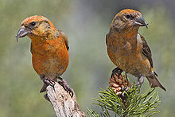
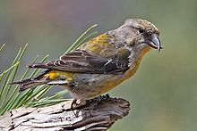
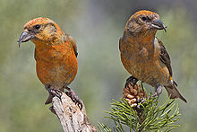
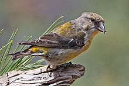

| Common Crossbill | |
|---|---|
|  | |
| Male Common Crossbill | |
|  | |
| Female Common Crossbill | |
| Conservation status | |
| Binomial name | |
| Loxia curvirostra Linnaeus, 1758 |
| Common Crossbill | |
|---|---|
|  | |
| Male Common Crossbill | |
|  | |
| Female Common Crossbill | |
| Conservation status | |
| Binomial name | |
| Loxia curvirostra Linnaeus, 1758 |
The Common Crossbill (Loxia curvirostra) is a small passerine bird in the finch family Fringillidae. It breeds in the spruce forests of North America, where it is known as Red Crossbill, as well as Europe and Asia; some populations (different species?) breed in pine forests in certain areas of all three continents, and in North America, also in Douglas-fir. It nests in conifers, laying 3–5 eggs.
This crossbill is mainly resident, but will regularly irrupt south if its food source fails. This species will form flocks outside the breeding season, often mixed with other crossbills.
The crossbills are characterised by the mandibles crossing at their tips, which gives the group its English name. They are specialist feeders on conifer cones, particularly the various spruce species but also some populations (different species?) in Douglas-fir and various pine species, and the unusual bill shape is an adaptation to assist the extraction of the seeds from the cone.
Adult males tend to be red or orange in colour, and females green or yellow, but there is much variation.
This species is difficult to separate from Parrot Crossbill and Scottish Crossbill, both of which breed within its Eurasian range. The identification problem is less severe in North America, where only Red Crossbill and White-winged Crossbill occur. However, the South Hills Crossbill, occurring in the South Hills and Albion Mountains in Idaho, USA, has recently been described as a new species (Loxia sinesciuris). It is virtually identical to the Red Crossbill differing slightly in body dimensions and calls and shows a very low degree of hybridization with the Red Crossbill.
Plumage distinctions from Parrot and Scottish Crossbills are negligible. The head and bill are smaller than in either of the other species. Care is needed to identify this species. The glip or chup call is probably the best indicator.
Work on vocalisation in North America suggest that, in that continent alone, there are eight or nine populations of Red Crossbill with different calls, which rarely if ever interbreed. These forms also vary in terms of bill size and structure, and specialise on the seed cones of different species of conifer. Few ornithologists seem inclined to give these forms species status at present.
Some large-billed, pine-feeding populations currently assigned to this species in the Mediterranean area may possibly be better referred to either Parrot Crossbill or alternatively to new species in their own right, but as yet, research into them is still at a very early stage. These include Balearic Crossbill L. curvirostra balearica and North African Crossbill L. curvirostra poliogyna, feeding primarily on Aleppo Pine (Pinus halepensis); Cyprus Crossbill L. curvirostra guillemardi, feeding primarily on European black pine (Pinus nigra); and an as-yet unidentified crossbill with a Parrot Crossbill-size bill feeding primarily on Bosnian Pine (Pinus heldreichii) in the Balkans. These populations also differ on plumage, with the Balearic, North African and Cyprus races having yellower males, and the Balkan type having deep purple-pink males; this however merely reflects the differing anthocyanin content of the cones they feed on, as these pigments are transferred to the feathers.

.jpg){kind=link}
.jpg){kind=link}